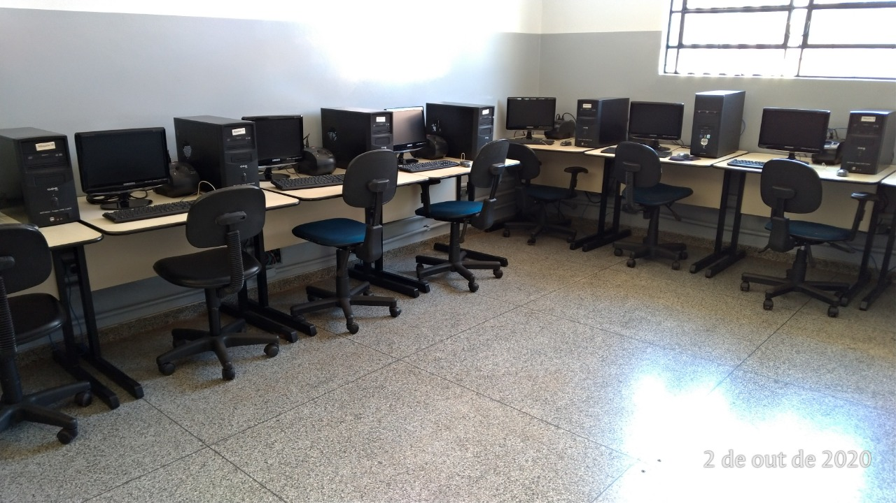

PARE AGORA DE USAR TDIC NA ESCOLA!
O LIQUIDIFICADOR E O PORQUÊ VOCÊ NÃO DEVE USAR TDIC NA ESCOLA
ME PARECE CONSENSO A IMPORTÂNCIA DE INSERIR TDIC NAS ESCOLAS, BEM COMO A EXISTÊNCIA DE DIVERSOS DESAFIOS QUE ENVOLVEM ESSE PROCESSO.
NÃO QUE UM ENSINO SEM A PRESEÇA DE TDIC SEJA RUIM. HÁ EXCELENTES DOCENTES QUE PREFEREM NÃO RECORRER A TAIS RECURSOS. DENTRE OS QUE SE AVENTURAM, AS DIFICULDADES SÃO MUITAS, EMBORA NÃO SEJAM APENAS PERCALÇOS. VOU TENTAR CONSTRUIR UM LINHA DE ARGUMENTAÇÃO QUE TRAGA ALGUNS PONTOS QUE EU CONSIDERO PERTINENTE AO TRATAR DE PROPOSTAS QUE SE COMPROMETEM A DIALOGAR COM AS TDIC.
INICIALMENTE, PRECISO ESCLARECER O LOCAL DE FALA NO QUAL ME ENCONTRO. MINHAS EXPERIÊNCIAS COM A SALA DE AULA SÃO PARCAS, NO MÁXIMO UM CURTO PERÍODO DE ESTÁGIO. NO ENTANTO, FUI (E CONTINUO SENDO) ESTUDANTE POR MUITOS ANOS E ACOMPANHO DIVERSAS DISCUSSÕES NO CAMPO DA ACADEMIA ACERCA DAS TDIC, POR PROFISSIONAIS EXPERIÊNTES. DESSE MODO, BUSCAREI ARTICULAR O QUE APRENDI SOBRE E O QUE ACREDITO SER A NOSSA REALIDADE. IMPORTANTE DESTACAR QUE ESTE NÃO É UM MATERIAL DIDÁTICO. AQUI ME PROPONHO A REFLETIR SOBRE O TEMA PROPOSTO COMO AGENTE DO PROCESSO DE APRENDIZAGEM. LEGAL NÉ?
GOSTARIA DE INICIAR REFLETINDO SOBRE OS JÁ CONHECIDOS DESAFIOS DE TRAZER TDIC PARA A SALA DE AULA. FALANDO "TRAZER AS TDIC" PARECE QUE ESTAMOS CONSIDERANDO A ESCOLA COMO UMA CAVERNA NA PRÉ-HISTÓRIA. AS TDIC JÁ FAZEM PARTE DO NOSSO CONTEXTO SOCIAL. ELAS ESTÃO EM GRANDE PARTE DAS ESCOLAS, POIS MUITAS POSSUEM LABORÁTÓRIOS DE INFORMÁTICA E DEMAIS EQUIPAMENTOS, ACESSO À INTERNET E OS ESTUDANTES POSSUEM CELULARES. CLARO, HÁ LOCAIS QUE NÃO POSSUEM NENHUM TIPO DE RECURSO, SOBRETUDO NAS PARCELAS MAIS POBRE DA SOCIEDADE.
MAS NÃO PODEMOS DESCONSIDERAR QUE HÁ ALGUNS DISPOSITIVOS NA MAIORIA DOS LOCAIS. QUERO CHAMAR A ATENÇÃO PARA OS LOCAIS EM QUE AS TDIC ESTÃO PRESENTES. SE NÃO HÁ ESSES EQUIPAMENTOS, A DISCUSSÃO VAI SE LIMITAR NA SUA DIPONIBILIDADE, DE MODO QUE POLÍTICAS PÚBLICAS DEVAM SER COBRARADAS - SEM DÚVIDAS. O ACESSO É O PRIMEIRO E MAIS IMPORTANTE ASPECTO, JÁ QUE SEM OS EQUIPAMENTOS, NÃO HÁ O QUE SER FEITO. OUTRA SITUAÇÃO É HAVER DISPOSITIVOS SUFICIENTES PARA TODAS AS PESSOAS E COM QUALIDADE. HAVENDO ESTES, PRECISA-SE LEVAR EM CONTA A MANUTENÇÃO, UMA VEZ QUE ELES ESTRAGAM FACILMENTE. MAS ISSO AINDA NÃO É SUFICIENTE.
QUANDO EU ESTUDAVA NO ENSINO MÉDIO, HAVIA OS EQUIPAMENTOS DE QUALIDADE RAZOÁVEL, CONEXÃO COM A INTERNET (DUVIDOSA, MAS RAZOÁVEL) E ASSISTENCIA TÉCNICA. E, MESMO ASSIM, NÃO HAVIA NENHUMA PROPOSTA CONSISTENTE DE APRENDIZAGEM QUE, DE FATO, ARTICULASSE AS TDIC COM O CURRÍCULO. DETALHE: EU ESTUDAVA EM UMA ESCOLA PÚBLICA E MINHA TURMA NO 3º ANO TINHA 10 PESSOAS.

ISSO ME FEZ LEMBRAR DE UMA SITUAÇÃO BEM ALEATÓRIA QUE ACONTECEU COMIGO EM UMA AULA DE PORTUGUÊS. CLICA NO PLAY PARA EU TE CONTAR, CASO QUEIRA SABER.
CONTINUANDO, AQUI CABERIA FALAR DA TÃO DISCUTIDA FORMAÇÃO DOCENTE INICIAL E CONTINUADA. AO INVÉS DE ME ALONGAR NESSE ASPECTO, QUERO DESTACAR QUE É NECESÁRIO (E ÁRDUO) SUPERAR A IDEIA DE EMPREGAR AS TDIC COMO SE O SEU USO FOSSE O PRÓPRIO FIM. OU, AINDA, NA MERA PERSPECTIVA DE SUBISTITUIR ALGO QUE NÃO SEJA DIGITAL, COMO PEDIR PARA OS ESTUDANTES LEREM UM TEXTO EM PDF NO LUGAR DE UMA FOLHA IMPRESSA.
NÃO SEI AO CERTO COMO FAZER, PRECISARIA COLOCAR O QUE PENSO À PROVA. MAS TENHO ESSES PALPITES DE COMO NÃO FAZER. ANTES DE VOCÊ ME ACUSAR DE TER COLOCADO UM CLICKBAIT, VOU RELACIONAR O QUE EU DISSE ACIMA COM O LIQUIDIFICADOR...
O LIQUIDIFICADOR É IDEAL PARA MISTURAR COISAS. DIFERENTE DA BATEDEIRA, QUE ALÉM DE MISTURAR, DEIXA A MISTURA AERADA, AS LÂMINAS AFIADAS DO LIQUIDIFICADOR PODEM FRACIONAR AS COISAS EM PEDAÇOS MUITO PEQUENOS, MAS POSSUÍ MAIOR DIFICULDADE DE MISTURAR COM O AR. NUNCA TENTEI, MAS ACHO QUE NÃO DÁ PARA FAZER CLARA EM NEVE NO LIQUIDIFICADOR (EMBORA SEJA POSSÍVEL FAZER MOLHO DE ALHO SE MISTURARMOS LEITE BEM GELADO COM ÓLEO E, POSSIVELMENTE, UM POUCO DE AR).
PENSE QUE AS TDIC SEJAM UM DETERMINADO INGREDIENTES E VOCÊ COLOCA NO COPO DO LIQUIDIFICADOR, QUE É O CONTEXTO ESPECÍFICO. EM SEGUIDA ADCIONA OS DEMAIS INGREDIENTES, QUE SÃO OS CONTEÚDOS DISCIPLINARES. SE VOCÊ TENTAR BATER ISSO, VAI DAR RUIM, PORQUE PRECISA DE MAIS LÍQUIDO, COMO A ÁGUA, QUE VAI REPRESENTAR A ELABORAÇÃO DO CURRÍCULO. SE BATER TUDO, VAMOS TER UM CURRÍCULO QUE INTEGRA TDIC AOS CONTEÚDOS. A LÂMINA SERIA O DOCENTE, QUE VAI ARTICULAR OS CONTEÚDOS COM AS TDIC. PODEMOS, AINDA CONSIDERAR O MOTOR COMO OS OBJETIVOS DA EDUCAÇÃO, DE FORMAR SUJEITOS MAIS CRÍTICOS, POR EXEMPLO. O QUE ESTARIA REPRESENTADO OS ESTUDANTES? TALVEZ A PESSOA QUE FOR BEBER A MISTURA. MAS ELA VAI BEBER SE TIVER UM GOSTINHO BOM OU ENTENDER QUE AQUILO É NECESSÁRIO.
CONCLUINDO, FOI SÓ UM CLICKBAIT MESMO KKK
A SABER: "CLICKBAIT É UMA TÁTICA USADA NA INTERNET PARA GERAR TRÁFEGO ONLINE POR MEIO CONTEÚDOS ENGANOSOS OU SENSACIONALISTAS. TAMBÉM CHAMADO DE "CAÇA-CLIQUE", ESSE TERMO REFERE-SE TAMBÉM À QUEBRA DE EXPECTATIVA POR PARTE DO USUÁRIO QUE FOI "FISGADO" POR ESSA ISCA DE CLIQUES." DEPOIS NOS CONTE SE VOCÊ CAIU.
BRINCADEIRAS À PARTE, VAMOS SEGUIR... CONSIDERANDO UM CONTEXTO QUE AS TDIC SÃO AMPLAMENTE UTILIZADAS, HÁ OUTRO ELEMENTO QUE ME PREOCUPA BASTANTE, QUE SÃO AS IMPLICAÇÕES QUE ELAS PODEM CAUSAR NA SAÚDE DAS PESOAS. VAMOS CONVERSAR UM POUCO MAIS SOBRE ESSA QUESTÃO...